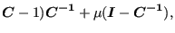
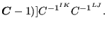
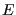
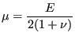
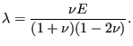
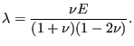

These are material models which can be used to simulate textile behavior (tension-only) and concrete (compression-only). In essence, a one-dimensional Hooke-type relationship is established between the principal stresses and principal strains, thereby suppressing the compressive stress range (tension-only materials) or tensile stress range (compression-only materials).
The Cauchy-Green tensor can be written as a function of its eigenvalues and eigenvectors as follows:
|  | (266) |
where
are the structural tensors satisfying
 ,
,
 being the
principal directions [18]. From this, the second Piola-Kirchhoff
stress tensor can be defined by:
being the
principal directions [18]. From this, the second Piola-Kirchhoff
stress tensor can be defined by:
|  | (267) |
where, for tension-only materials,
|  | (268) |
where  is an elastic modulus, the term within the first parentheses is a
Lagrange principal strain and the term within the square brackets is a
correction term suppressing the negative stresses (pressure). It is a function tending to zero for negative strains (-0.5 being the
smallest possible Lagrange strain), to one for large positive strains and
switches between both in a region surrounding zero strain. The extent of this
region is controlled by the parameter  : the smaller its value, the
smaller the transition region (the sharper the switch). It is a monotonically
increasing function of the strain, thus guaranteeing convergence. The correction term is
in fact identical to the
term used to cut off tensile stresses for penalty contact in
Equation(160) and Figure (132). Replacing
``overclosure'' and ``pressure'' by ``principal strain'' and ``principal
stress'' in that figure yields the function f. Although compressive stresses
are suppressed, they are not zero altogether. The maximum allowed compressive
stress (in absolute value) amounts to
. Instead of chosing and
: the smaller its value, the
smaller the transition region (the sharper the switch). It is a monotonically
increasing function of the strain, thus guaranteeing convergence. The correction term is
in fact identical to the
term used to cut off tensile stresses for penalty contact in
Equation(160) and Figure (132). Replacing
``overclosure'' and ``pressure'' by ``principal strain'' and ``principal
stress'' in that figure yields the function f. Although compressive stresses
are suppressed, they are not zero altogether. The maximum allowed compressive
stress (in absolute value) amounts to
. Instead of chosing and  the
user defines and the maximum allowed compressive stress, from which
the
user defines and the maximum allowed compressive stress, from which
 is determined.
is determined.
The material definition consists of a *MATERIAL card defining the name of the material. This name HAS TO START WITH ''TENSION_ONLY'' but can be up to 80 characters long. Thus, the last 68 characters can be freely chosen by the user. Within the material definition a *USER MATERIAL card has to be used satisfying:
First line:
Following line:
For a compression-only materials the name of the material has to start with ''COMPRESSION_ONLY'' (maximum 64 characters left to be chosen by the user) and the second constant is the maximum allowed tension. Examples are leifer2 and concretebeam in the test example suite.